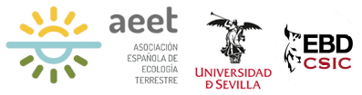

Optimizando el uso de R para el análisis de datos en Ecología
Curso organizado por la Asociación Española de Ecología Terrestre (AEET), en colaboración con la Facultad de Biología de la Universidad de Sevilla y la Estación Biológica de Doñana (CSIC).
Impartido por Ignasi Bartomeus, Elena Quintero y Francisco Rodríguez-Sánchez.
Sevilla, 13-17 enero 2025.
Resumen
El lenguaje y programa estadístico R se ha establecido como una de las herramientas principales para el análisis de datos en ecología (y otras muchas disciplinas científicas). En este curso, de nivel medio-avanzado, profundizaremos tanto en aspectos de programación en R como en el manejo y visualización de datos y en los análisis estadísticos más frecuentes en ecología (modelos mixtos, modelos generalizados, análisis multivariantes, etc).
El curso pretende establecer buenos fundamentos teóricos mediante una aproximación fundamentalmente práctica. El método docente se basa en aprender haciendo (“learn by doing”): aprenderemos programación avanzada de R (e.g. funciones, vectorización, simulaciones, computación reproducible) mientras desarrollamos diversos análisis y visualización de datos. Se repasarán los fundamentos y aplicación de diferentes técnicas estadísticas mezclando el componente práctico y teórico mediante el desarrollo de múltiplos ejemplos y casos de estudio, enfatizando la comprensión del funcionamiento de los diversos análisis, errores más comunes, buenas prácticas y su uso adecuado.
El curso es ideal para alumnos que ya utilizan R para analizar datos pero sienten que no están aprovechando a fondo todo el potencial de R ni de sus datos. Durante el curso los alumnos podrán plantear dudas sobre cómo analizar sus propios datos.
Dirigido a
El curso está dirigido a estudiantes fundamentalmente de postgrado, profesores e investigadores con conocimientos básicos de estadística que ya sepan utilizar R pero deseen profundizar en el manejo de R para el análisis de datos en ecología. El curso ofrece la oportunidad de mejorar los conocimientos de estadística y las capacidades en el manejo de una herramienta muy potente y versátil para el análisis de datos, por lo que contribuirá a la formación técnica de alumnos de postgrado con un perfil investigador, así como de investigadores postdoctorales y profesores.
El alumno debe saber interpretar modelos lineales simples (regresión lineal) y estar familiarizado con R (importar datos, manejar data frames, hacer gráficas sencillas, ajustar modelos simples tipo lm o glm). Se desaconseja la inscripción de alumnos aún con nivel de iniciación a R, ya que el ritmo del curso es intenso y se haría difícil su aprovechamiento. Además es necesario tener un nivel básico de inglés ya que muchas diapositivas se presentan en ese idioma.
Lugar
Aula 1.07 (1ª planta), Facultad de Biología (Edificio ROJO)
Campus de Reina Mercedes, Universidad de Sevilla
Avda. Reina Mercedes s/n
Foro
Foro para debates, preguntas, etc: https://github.com/Rstats-courses/CursoR-AEET-2025/discussions
Feedback
Vuestros comentarios son muy útiles para la mejora continua del curso. Podéis dejar vuestros comentarios en este formulario anónimo: https://forms.gle/EftCaUgkzGRGEfFv8. ¡Gracias!
Bibliografía recomendada
